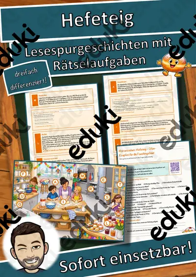
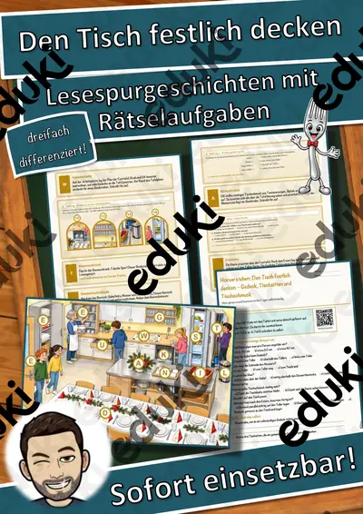
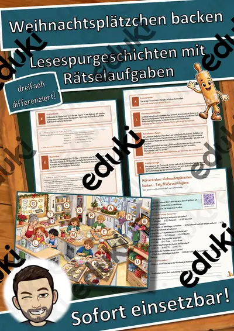
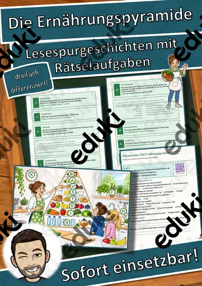

Bärlauch – Frühlingskraut mit giftigen Doppelgängern – Lesespurgeschichte mit Rätselaufgaben (Klasse 6)

Hefeteig – Ofen-Krapfen für die Faschingsfeier – Lesespurgeschichte mit Rätselaufgaben (Klasse 6)

Sicher schneiden – Krallengriff, Brückengriff und eine Gemüsesuppe – Lesespurgeschichte mit Rätselaufgaben (Klasse 5)

Weihnachtsgewürze – Zimt, Nelke, Vanille & Co. – Lesespurgeschichte mit Rätselaufgaben (Klasse 6)

Ein Festtagsmenü planen – Einkauf, Mengen und Zeitplan – Lesespurgeschichte mit Rätselaufgaben (Klasse 8)

Den Tisch festlich decken – Gedeck, Tischsitten und Tischschmuck – Lesespurgeschichte mit Rätselaufgaben (Klasse 6)

Weihnachtsplätzchen backen – Teig, Maße und Hygiene – Lesespurgeschichte mit Rätselaufgaben (Klasse 5)

Kalte Küche fürs Klassenbuffet – Salate, Dips und Brotaufstriche – Lesespurgeschichte mit Rätselaufgaben (Klasse 7)

Kochen, Dünsten, Braten, Backen – die Garmethoden – Lesespurgeschichte mit Rätselaufgaben (Klasse 7)

Vorräte wie zu Omas Zeiten – Einkochen, Trocknen, Einlegen – Lesespurgeschichte mit Rätselaufgaben (Klasse 3)

Das Pausenfrühstück – fit in den Schultag – Lesespurgeschichte mit Rätselaufgaben (Klasse 1)

Die Ernährungspyramide – Lesespurgeschichte mit Rätselaufgaben (Klasse 6)

Die Schulküche – Lesespurgeschichte mit Rätselaufgaben (Klasse 7)
Keine Materialien gefunden – versuch einen anderen Suchbegriff oder Filter.
Ernährung und Küche zum Lesen
Hauswirtschaft ist ein Praxisfach, das ohne Theorie nicht auskommt: Wer kocht, muss Hygiene, Garverfahren und Mengen verstehen. Die Lesespuren dieser Seite erklären diese Grundlagen in Geschichten und eignen sich vor der Küchenstunde wie danach.
Klasse 1 und 3: Frühstück und Vorräte
Jüngere Kinder beginnen mit „Das Pausenfrühstück“ und „Vorräte wie zu Omas Zeiten“. Dort geht es um gesunde Auswahl und um die Frage, wie früher Essen haltbar gemacht wurde.
Klasse 5 und 6: Grundtechniken
„Sicher schneiden“ ist der natürliche Start in der Schulküche. In Klasse 6 folgen „Bärlauch“, „Hefeteig“, „Weihnachtsgewürze“, „Den Tisch festlich decken“ und „Die Ernährungspyramide“. Zur Adventszeit passt „Weihnachtsplätzchen backen“.
Klasse 7 und 8: Planen und organisieren
Die höheren Klassen planen größere Vorhaben: „Kalte Küche fürs Klassenbuffet“, „Kochen, Dünsten, Braten, Backen“, „Die Schulküche“ und „Ein Festtagsmenü planen“. Dabei wird Teamarbeit geübt.
Praktisch einsetzbar
Die Geschichten lassen sich in der Theoriestunde lesen und danach in der Küche umsetzen. Rezepte und Lösungen liegen bei.
Sicherheit und Hygiene
Wer die Küche betritt, muss Regeln kennen: Hände waschen, Messer sicher führen, heiße Flächen meiden. Die Lesespuren erklären diese Grundlagen an passender Stelle, ohne den Zeigefinger zu heben, und bereiten so einen sicheren Praxisunterricht vor.
Kleine Küchenprojekte
Für Klassen, die nicht jede Woche kochen können, eignen sich kleine Projekte: ein Buffet, eine Backaktion zum Advent, ein gedeckter Tisch für die Eltern. Die Lesespuren bereiten diese Aktionen vor und liefern Vokabular, Abläufe und Checklisten.
Die Lesespur zur Ernährungspyramide bietet außerdem einen guten Einstieg in Gespräche über gesundes Essen und Einkaufsentscheidungen, die auch im Fach Sachunterricht oder Biologie anschlussfähig sind.
Häufige Fragen
Brauche ich eine Schulküche?
Für die Lesespuren nicht. Sie funktionieren im Klassenzimmer. Wer kochen will, setzt sie vor dem Praxisunterricht ein.
Gibt es Rezepte?
In einzelnen Materialien ja, etwa zu Hefeteig oder Plätzchen.
Passt das Material zu Allergien und Unverträglichkeiten?
Das Thema wird nur am Rand behandelt. Prüfe bei Praxisstunden die Zutaten und Allergien in deiner Gruppe selbst.
Für welche Klassen eignet sich die Reihe?
Besonders für Klasse 5 bis 7, einzelne Titel auch für die Grundschule.